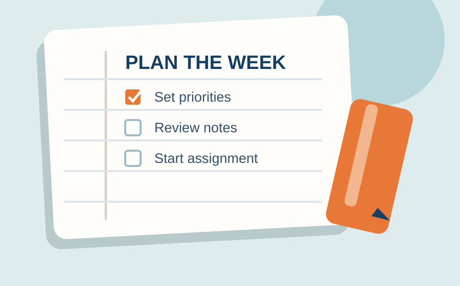

A clear place for course work
Keep your study tasks in play.
See what is due, add the details that matter, and give every assignment a clear next step.
One task at a time makes a busy week easier to read.
Study rhythm
A little structure helps.
Use the button to browse three study illustrations.

Map out your study week.
About the app
Built for the work between classes.
StudyCourt brings assignments, revision, quizzes and other course work into one list. Each task has a course, deadline, description and space for extra notes, so the next step is easier to find.
You can add, edit, review and remove tasks. Search and course filters make a long list easier to scan. Tasks stay in this browser on this device.
Try the planner →About me
Hi, I’m Hao Jinde.
I am a Computer Science student in class 2501 and I enjoy playing basketball. I am learning web development in Information Technology Systems.
I use a course and due date for each task so I can see what needs attention. This project is a way to put those study details in one place.